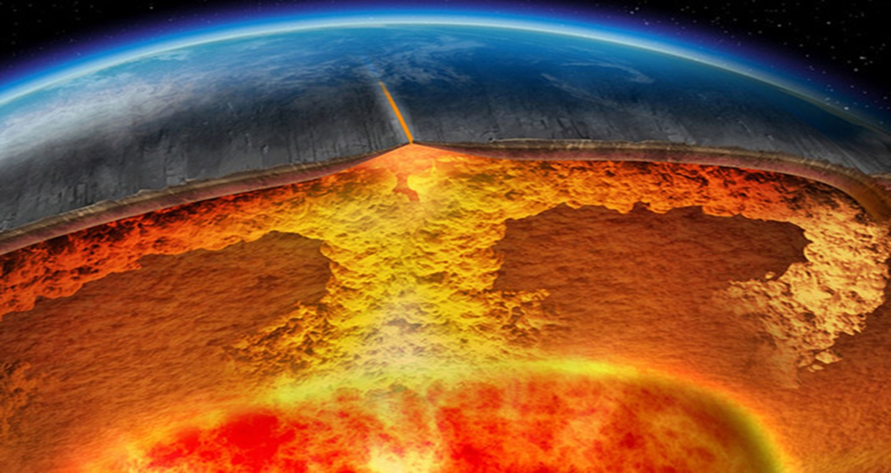
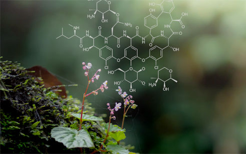

ХИМИЯ
ХИМИЯ, наука о химических элементах, их соединениях и превращениях, происходящих в результате химических реакций. Она изучает, из каких веществ состоит тот или иной предмет; почему и как ржавеет железо, и почему олово не ржавеет; что происходит с пищей в организме; почему раствор соли проводит электрический ток, а раствор сахара – нет; почему одни химические изменения происходят быстро, а другие – медленно. Главная задача химии – выяснение природы вещества, главный подход к решению этой задачи – разложение вещества на более простые компоненты и синтез новых веществ. Используя этот подход, химики научились воспроизводить множество природных химических субстанций и создавать материалы, не существующие в природе. На химических предприятиях уголь, нефть, руды, вода, кислород воздуха превращаются в моющие средства и красители, пластики и полимеры, лекарства и металлические сплавы, удобрения, гербициды и инсектициды и т.д. Живой организм тоже можно рассматривать как сложнейший химический завод, на котором тысячи веществ вступают в точно отрегулированные химические реакции.
ЭЛЕМЕНТЫ И СОЕДИНЕНИЯ
Элементы
Исследование сложного вещества начинается с попыток разложить его на более простые. Простейшая форма материи, в которой сохраняется определенная совокупность физических и химических свойств, называется химическим элементом. Химические элементы – это частицы вещества, представляющие собой совокупность атомов с одинаковым зарядом ядра. Водород, кислород, хлор, натрий, железо – все это элементы. Элемент нельзя разложить на более простые составляющие обычными методами: с помощью тепла, света, электричества или под действием другого вещества. Для этого нужны колоссальное количество энергии, специальное оборудование (например, ускоритель частиц) или высокие температуры, сравнимые с температурами в недрах Солнца. Из 109 известных элементов в природе существует девяносто два элемента, остальные получены искусственно. Все они систематизированы в периодической таблице элементов, где каждому элементу соответствует свой порядковый номер, называемый атомным номером (см.ЭЛЕМЕНТЫ ХИМИЧЕСКИЕ ПЕРИОДИЧЕСКАЯ СИСТЕМА ЭЛЕМЕНТО). В табл. 1 перечислены первые 103 элемента в алфавитном порядке. Из этого ограниченного набора элементов и состоят миллионы химических веществ.
| Элемент | Символ | Атомный номер | Атомная масса |
| Азот | N | 7 | 14,0067 |
| Актиний | Ac | 89 | (227) |
| Алюминий | Al | 13 | 26,98154 |
| Америций | Am | 95 | (243) |
| Аргон | Ar | 18 | 39,948 |
| Астат | At | 85 | (210) |
| Барий | Ba | 56 | 137,33 |
| Бериллий | Be | 4 | 9,01218 |
| Берклий | Bk | 97 | (247) |
| Бор | B | 5 | 10,811 |
| Бром | Br | 35 | 79,904 |
| Ванадий | V | 23 | 50,9415 |
| Висмут | Bi | 83 | 208,9804 |
| Водород | H | 1 | 1,0079 |
| Вольфрам | W | 74 | 183,85 |
| Гадолиний | Gd | 64 | 157,25 |
| Галлий | Ga | 31 | 69,723 |
| Гафний | Hf | 72 | 178,49 |
| Гелий | He | 2 | 4,0026 |
| Германий | Ge | 32 | 72,59 |
| Гольмий | Ho | 67 | 164,9304 |
| Диспрозий | Dy | 66 | 162,50 |
| Европий | Eu | 63 | 151,96 |
| Железо | Fe | 26 | 55,847 |
| Золото | Au | 79 | 196,9665 |
| Индий | In | 49 | 114,82 |
| Иод | I | 53 | 126,9045 |
| Иридий | Ir | 77 | 192,22 |
| Иттербий | Yb | 70 | 173,04 |
| Иттрий | Y | 39 | 88,9059 |
| Кадмий | Cd | 48 | 112,41 |
| Калий | K | 19 | 39,0983 |
| Калифорний | Сf | 98 | (251) |
| Кальций | Ca | 20 | 40,078 |
| Кислород | O | 8 | 15,9994 |
| Кобальт | Co | 27 | 58,9332 |
| Кремний | Si | 14 | 28,0855 |
| Криптон | Kr | 36 | 83,80 |
| Ксенон | Xe | 54 | 131,29 |
| Кюрий | Cm | 96 | (247) |
| Лантан | La | 57 | 138,9055 |
| Лоуренсий | Lr | 103 | (260) |
| Литий | Li | 3 | 6,941 |
| Лютеций | Lu | 71 | 174,967 |
| Магний | Mg | 12 | 24,305 |
| Марганец | Mn | 25 | 54,9380 |
| Медь | Cu | 29 | 63,546 |
| Менделевий | Md | 101 | (258) |
| Молибден | Mo | 42 | 95,94 |
| Мышьяк | As | 33 | 74,9216 |
| Натрий | Na | 11 | 22,98977 |
| Неодим | Nd | 60 | 144,24 |
| Неон | Ne | 10 | 20,179 |
| Нептуний | Np | 93 | 237,0482 |
| Никель | Ni | 28 | 58,69 |
| Ниобий | Nb | 41 | 92,9064 |
| Нобелий | No | 102 | (259) |
| Олово | Sn | 50 | 118,710 |
| Осмий | Os | 76 | 190,2 |
| Палладий | Pd | 46 | 106,42 |
| Платина | Pt | 78 | 195,08 |
| Плутоний | Pu | 94 | (244) |
| Полоний | Po | 84 | (209) |
| Празеодим | Pr | 59 | 140,9077 |
| Прометий | Pm | 61 | (145) |
| Протактиний | Pa | 91 | 231,0359 |
| Радий | Ra | 88 | 226,0254 |
| Радон | Rn | 86 | (222) |
| Рений | Re | 75 | 186,207 |
| Родий | Rh | 45 | 102,9055 |
| Ртуть | Hg | 80 | 200,59 |
| Рубидий | Rb | 37 | 85,4678 |
| Рутений | Ru | 44 | 101,07 |
| Самарий | Sm | 62 | 150,36 |
| Свинец | Pb | 82 | 207,2 |
| Селен | Se | 34 | 78,96 |
| Сера | S | 16 | 32,066 |
| Серебро2) | Ag | 47 | 107,8682 |
| Скандий | Sc | 21 | 44,9559 |
| Стронций | Sr | 38 | 87,62 |
| Сурьма | Sb | 51 | 121,75 |
| Таллий | Tl | 81 | 204,383 |
| Тантал | Ta | 73 | 180,9479 |
| Теллур | Te | 52 | 127,60 |
| Тербий | Tb | 65 | 158,9254 |
| Технеций | Tc | 43 | [97] |
| Титан | Ti | 22 | 47,88 |
| Торий | Th | 90 | 232,0381 |
| Тулий | Tm | 69 | 168,9342 |
| Углерод | C | 6 | 12,011 |
| Уран | U | 92 | 238,0289 |
| Фермий | Fm | 100 | (257) |
| Фосфор | P | 15 | 30,97376 |
| Франций | Fr | 87 | (223) |
| Фтор | F | 9 | 18,998403 |
| Хлор | Cl | 17 | 35,453 |
| Хром | Cr | 24 | 51,9961 |
| Цезий | Cs | 55 | 132,9054 |
| Церий | Ce | 58 | 140,12 |
| Цинк | Zn | 30 | 65,39 |
| Цирконий | Zr | 40 | 91,224 |
| Эйнштейний | Es | 99 | (252) |
| Эрбий | Er | 68 | 167,26 |
| 1) В расчете на атомную массу изотопа углерода 12С, равную 12,0000. В круглых скобках указано массовое число наиболее долгоживущего нуклида. 2)См. также АТОМНАЯ МАССА. |
Соединения
Элементы, соединяясь друг с другом, образуют сложные вещества – химические соединения. Соль, вода, ржавчина, каучук – это примеры соединений. Соединение состоит из элементов, но обычно по своим свойствам и внешнему виду не напоминает ни один из них. Так, ржавчина образуется при взаимодействии газа – кислорода с металлом – железом, а сырьем для получения многих волокон служат уголь, вода и воздух. Именно индивидуальность свойств – одна из черт, отличающих соединение от простой смеси. Другая, и наиболее важная, характеристика соединения заключается в том, что элементы всегда соединяются между собой в определенных массовых соотношениях. Например, вода состоит из 2,016 массовых частей водорода и 16,000 массовых частей кислорода. Массовое соотношение между водородом и кислородом в водах Волги и льдах Антарктики одинаково и равно 1:8. Иными словами, каждое химическое соединение имеет вполне определенный состав, т.е. всегда содержит одни и те же элементы в одних и тех же массовых соотношениях. Это один из основных химических законов – закон постоянства состава.
ХИМИЯ
Химия как наука изучает вещества, их свойства, как и почему вещества соединяются или разделяются, образуя другие вещества, и как они взаимодействуют с энергией.
Многие люди думают, что химики — это научные люди в белых халатах, которые смешивают странные жидкости в лаборатории, но на самом деле мы все химики. Понимание основных понятий химии как науки важно практически для каждой профессии.
Химия-это часть всего в нашей жизни.
Каждый существующий материал состоит из материи — даже наши собственные организмы. Химия участвует во всем, что делает человек, от выращивания и приготовления пищи до уборки дома и запуска космического аппарата.
Химия — это одна из основополагающих наук, которая помогает нам описывать и объяснять наш мир.
Разделы науки химии
Существует пять основных разделов химии, каждый из которых имеет много областей изучения.
- Аналитическая
- Органическая
- Неорганическая
- Биохимия
- Физическая
Аналитическая
Аналитическая химия как наука развивает теорию химического анализа веществ и материалов, разрабатывает методы идентификации и обнаружения. Проводит анализ и определяет химические элементы веществ с целью получения информации о природе вещества.
Анализ аналитических методов необходим для поиска возможностей практического применения теории.
Аналитическая химия использует качественные и количественные наблюдения для выявления и измерения физических и химических свойств веществ. В определенном смысле вся химия аналитична.
Неорганическая
Неорганическая химия изучает такие вещества и газы в состав которых не входит углерод.
Раздел науки изучает металлы и неметаллы, оксиды и соли, гидроксиды и кислоты, нитриды и гидриды, а также технологии применения в производстве, защите и использовании сельскохозяйственных культур и скота.
Химическая технология
Инженеры-химики исследуют и разрабатывают новые материалы или процессы, связанные с химическими реакциями. Химическая инженерия сочетает в себе основы науки с инженерными и экономическими концепциями для решения технологических проблем.
Химическое машиностроение представляет базовую отрасль экономики как химическая и нефтехимическая промышленность и делится на две основные группы: промышленное применение и разработка новых продуктов.
Отрасли промышленности требуют от инженеров-химиков разработки новых способов сделать производство своей продукции более легким и экономически эффективным. Ученые-химики участвуют в проектировании и эксплуатации перерабатывающих предприятий, разрабатывают процедуры безопасности при обращении с опасными материалами и контролируют производство почти каждого продукта, который мы используем. Ученые-химики работают над разработкой новых продуктов и процессов в любой области-от фармацевтики до топлива и компьютерных компонентов.
Геохимия
Геохимики объединяют химию и геологию для изучения состава и взаимодействия между веществами, находящимися в земле.
Геохимики могут тратить больше времени на полевые исследования, чем другие ученые. Многие работают в службах по охране окружающей среды, определяя, как горнодобывающие операции и отходы могут повлиять на качество воды и окружающую среду. Они могут направляться в отдаленные заброшенные шахты для сбора проб и проведения грубых полевых оценок, а затем следовать за потоком через его водосбор, чтобы оценить, как загрязняющие вещества перемещаются через систему. Ученые раздела нефтяной геологии занимаются вопросами химического изучения состава нефти и связанных с ней природных образований. Они работают в нефтегазовых компаниях, чтобы помочь найти новые запасы энергии. Ученые этой науки также могут работать на трубопроводах и нефтяных вышках, чтобы предотвратить химические реакции, которые могут вызвать взрывы или разливы.

Судебная химия
Судебно-медицинские химики собирают и анализируют вещественные доказательства, оставленные на месте происшествия, чтобы помочь установить личности причастных лиц, а также ответить на другие жизненно важные вопросы, касающиеся того, как и почему было совершено событие. Судебно-медицинские химики используют широкий спектр методов анализа, таких как хроматография, спектрометрия и спектроскопия.
Например, химики разработали систему, которая выходит за рамки идентификации отпечатков пальцев. Этот метод может захватывать молекулы, содержащиеся в отпечатке пальца, включая липиды, белки, генетический материал или даже следовые количества взрывчатых веществ, которые могут быть дополнительно проанализированы. Новый инструмент по существу снимает тайну с определения химического состава отпечатков пальцев на местах событий.
Агрохимия
Агрохимия как неорганическая наука связана с веществами и химическими реакциями, которые участвуют в производстве, защите и использовании сельскохозяйственных культур и скота. Это междисциплинарная область которая опирается на связи со многими другими науками. Сельскохозяйственные химики необходимы в сельском хозяйстве, агентствах по охране окружающей среды, управлениях по контролю за продуктами питания и лекарствами или в частном секторе.
Агрохимия как наука разрабатывает удобрения, инсектициды и гербициды, необходимые для крупномасштабного растениеводства. Ученые занимающиеся этой наукой следят за тем, как используются продукты и как они влияют на окружающую среду. Они также разрабатывают пищевые добавки для повышения продуктивности мясных и молочных стад.
Сельскохозяйственная биотехнология является быстро растущим направлением в науке. Генетически манипулирующие культуры, чтобы быть устойчивыми к гербицидам, используемым для борьбы с сорняками на полях, требуют детального понимания как самих растений, так и химических веществ на молекулярном уровне. Биохимия как наука должна понимать генетику и потребности бизнеса в разработке культур, которые легче транспортировать или которые имеют более длительный срок хранения.
Органическая
Органическая химия специально изучает соединения, содержащие элемент углерод.
Углерод обладает многими уникальными свойствами, которые позволяют ему образовывать сложные химические связи и очень крупные молекулы.
Органическая химия известна как химия жизни, потому что все молекулы живой ткани, имеют углерод в своем составе.
Органических соединений теоретически может быть бесчисленное множество, а их строение более сложное, чем минеральные (неорганические) вещества.
Ученые, занимающиеся вопросами неорганической химии, разделились на множество самостоятельных наук.
Биохимия
Биохимия-это изучение химических процессов, происходящих внутри живых организмов.
В рамках этих широких категорий находятся бесчисленные области исследований, многие из которых оказывают важное влияние на нашу повседневную жизнь. Химики улучшают многие продукты, начиная с пищи, которую мы едим, и одежды, которую мы носим, и заканчивая материалами, из которых мы строим наши дома.Биохимия помогает защитить нашу окружающую среду и ищет новые источники энергии.
Пищевая
Пищевая наука имеет дело с тремя биологическими компонентами пищи — углеводами, липидами и белками.
- Углеводы это сахар и крахмал, химическое топливо, необходимое для функционирования наших клеток.
- Липиды это жиры и масла, которые являются существенными частями клеточных мембран и служат для смазывания и смягчения внутренних органов организма. Поскольку жиры содержат в 2 раза больше энергии на грамм, чем углеводы или белки, многие люди стараются ограничить их потребление, чтобы избежать избыточного веса.
- Белки это сложные молекулы, состоящие из от 100 до 500 или более аминокислот, которые соединяются вместе и складываются в трехмерные формы, необходимые для структуры и функционирования каждой клетки.
Наш организм может синтезировать некоторые аминокислоты, однако восемь из них, незаменимые аминокислоты, должны быть приняты в качестве части нашей пищи. Ученые-пищевики также занимаются неорганическими компонентами продуктов питания, такими как содержание в них воды, минералов, витаминов и ферментов.
Ученые-химики улучшают качество, безопасность, хранение и вкус наших продуктов. Они создают качественные продовольственные изделия и методы анализа пищевых производств. Они также работают в учреждениях по улучшению переработки и контролю за продуктами питания и лекарствами, чтобы проверять пищевые продукты и защищают нас от загрязнения или вредных практик.
Ученые-химики тестируют продукты, чтобы предоставить информацию, используемую для этикеток пищевых продуктов, или определить, как упаковка и хранение влияют на безопасность и качество продуктов питания. Ученые создают пищевые ароматизаторы и работают с химическими веществами, чтобы изменить вкус пищи.
Химики могут также работать над другими способами улучшения сенсорной привлекательности, такими как улучшение цвета, запаха или текстуры.
Химия окружающей среды
Химики-экологи изучают, как химические вещества взаимодействуют с окружающей средой.
Экологическая химия-это междисциплинарная наука, которая включает в себя как аналитическую химию, так и понимание науки об окружающей среде. Химики-экологи должны изучать химические вещества и химические реакции, присутствующие в естественных процессах в почве, воде и воздухе. Отбор проб и анализ показать, не загрязняла ли человеческая деятельность окружающую среду или не вызывала ли она вредных реакций.
Качество воды является важной областью химии окружающей среды. «Чистой» воды в природе не существует, в ней всегда растворены какие-либо минералы или другие вещества. Химики проверяют качество воды в реках, озерах и океанах на такие характеристики, как растворенный кислород, соленость, мутность, взвешенные осадки и водородный показатель РН. Вода, предназначенная для потребления человеком, должна быть свободна от вредных примесей и может быть обработана такими добавками, как фтор и хлор, чтобы повысить ее безопасность.

Физическая химия
Физическая химия как наука изучает общие законы и закономерности, определяющие строение и физикохимические свойства веществ, механизм и динамику их химических превращений при различных природных условиях.
Это активно развивающаяся наука которая решает множество прикладных задач по получению количественных и качественных данных о о свойствах соединений. В этой части развиваются новые направления связанные с пониманием свойств наноразмерных объектов и выяснением влияния биологически активных сред.
Роль физической химии в понимании фундаментальных. основ химии как науки на современном этапе является определяющей.